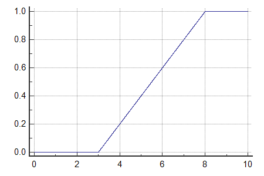

Tasks
CDF
CDF Properties
CDF to PMF/PDF
Instructions
Quick theory overview:
Procedure:
Given CDF of a random variable X, answer the following questions:
Generate CDF

Select Random Variable Type:
\
Discrete
Continuous
Submit
Enter PMF values:
Submit
Reset
Observations